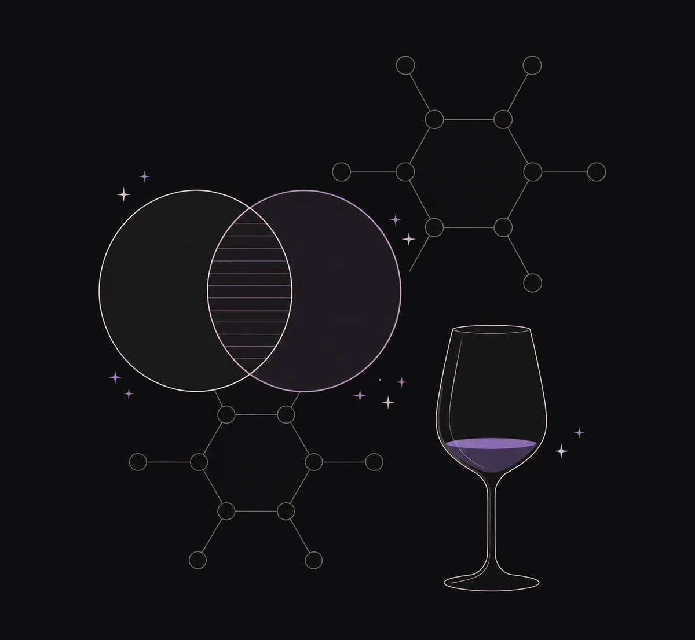
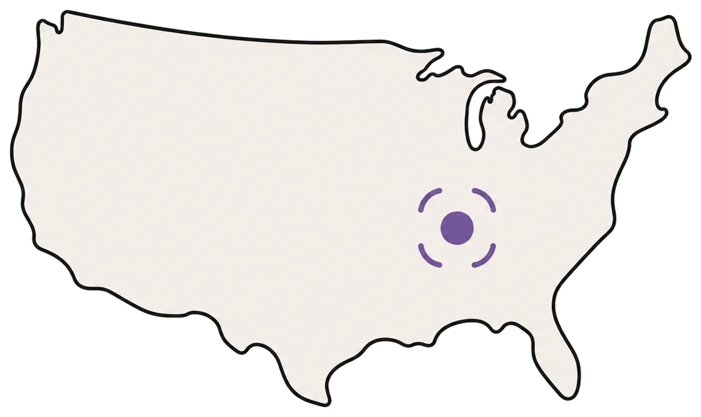

We started where the chemistry is hardest. Wine has hundreds of thousands of chemistry signals, every bottle is different, and language fails to describe what people actually feel. If the model could learn preference here, it could learn it anywhere. It did. This page is the proof.

Wine is the canonical proof problem for sensory AI. Every bottle is a one-off chemistry, hundreds of thousands of chemistry signals interact in non-obvious ways, descriptors vary by region and language, and the people who drink it disagree publicly about what's good. If a model can predict preference in wine, it can predict it anywhere.
We chose the hard problem on purpose. We built the proprietary chemistry dataset. We ran double-blind preference panels at scale. We trained the first model to link the chemistry of a wine to the score a population of consumers would give it.
The model worked. Then it kept working. On smoke-tainted vintages, on recipe matching, on consistency across years, on whitespace inside a category. What follows is the work we did to earn the right to do this in every other CPG category.
"The interplay between data and winemaking is super interesting. Any of the Tastry blends would be very well received."
A high-volume winemaker needed to grow a new label from year-one success to year-two scale without breaking the flavor profile. Tastry analyzed the year-one production and the available blenders, then ran computational blends against the target.
The winemaking team agreed the AI had found the correct blend on the first pass.
A winery suffered smoke exposure to 100% of fruit across five varietals and two blends. Tastry analyzed post-secondary wine and identified tannin recipes to ameliorate the smoke compounds.
The winemaker applied the recommended tannin solutions. Negative characteristics eliminated. Six months later, in barrel, the mitigation held.
A globally recognized Napa Cabernet, 200,000 cases at $150 a bottle, needed 20% more production without drifting from its signature style. Other approaches to source qualifying bulk wine had failed.
Tastry fingerprinted ten vintages of the wine into a style blueprint, then screened every bidder's sample for stylistic accuracy and appeal, and identified the only source that met the brand's standard.

A wine brand wanted to know where in the United States its existing products had the highest density of love. Tastry mapped predicted preference at the retailer and zip-code level.
Distribution shifted, shelf placement followed, retail sell-through climbed without changing the product.